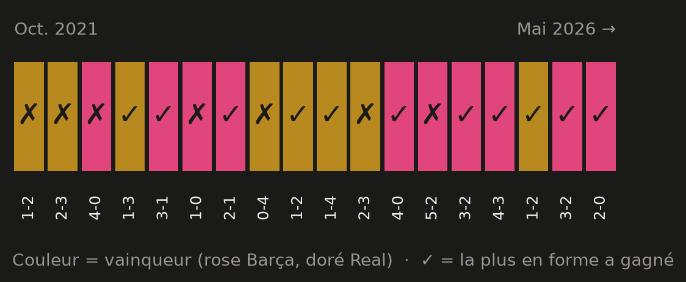
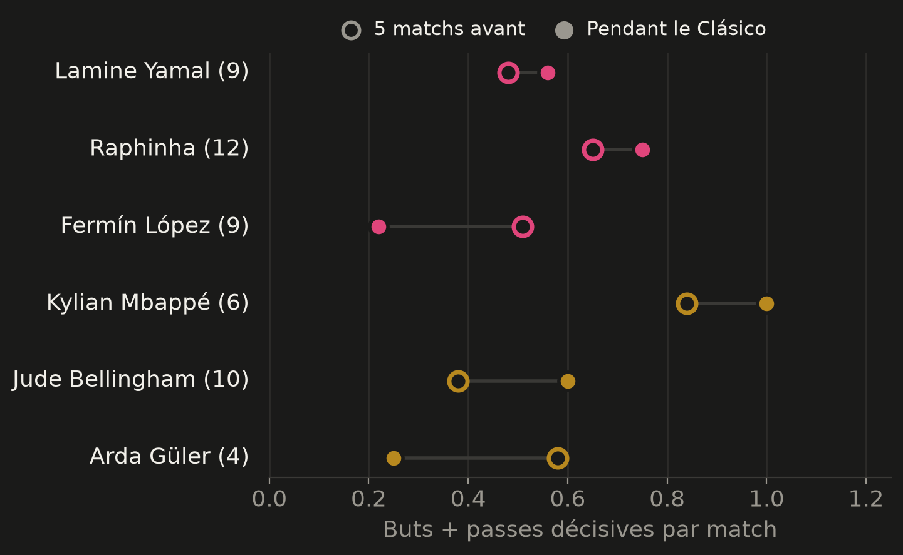
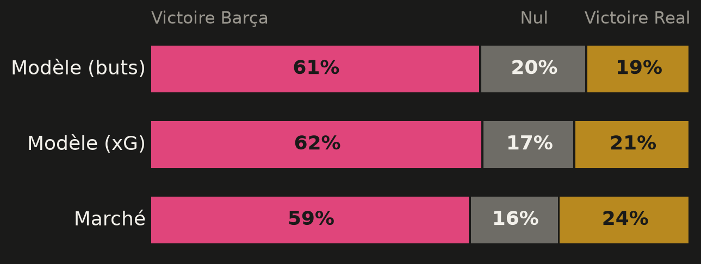

18 Clásicos passés au crible.
595 matchs officiels. 1 modèle statistique.
Victoires du Barça · nuls · victoires du Real
Buts marqués : 441 pour le Barça, 444 pour le Real.
124 ans de rivalité, 3 buts d'écart. L'histoire ne départage personne : il faut regarder ailleurs.
D'octobre 2021 à mai 2026, toutes compétitions : Liga, Coupe du Roi, Supercoupe.
Points et différence de buts sur les 5 matchs officiels précédents. Buts + passes des attaquants clés.
Force d'attaque et de défense sur les 38 derniers matchs de Liga, vérifiée avec les expected goals (xG).
Données croisées entre deux sources : 591 scores comparés, 0 écart.
L'équipe en meilleure forme a gagné 11 des 18 derniers Clásicos (61 %).

Mais un pile ou face ferait aussi bien 1 fois sur 4. Et l'écart de forme ne dit rien de l'écart au score (corrélation : −0,14).
Détail frappant : 0 match nul en 18 Clásicos.
FC Barcelone
12/15 · +9
Real Madrid
12/15 · +7
Le Barça est devant à la différence de buts, mais sort d'une défaite à Paris. Le Real enchaîne 4 victoires.
Absents annoncés : Olmo, E. García, Christensen (Barça) · Vinícius (suspendu), Rodrygo (Real).
Buts + passes décisives par match : sur les 5 matchs avant le Clásico (○) puis pendant le Clásico (●).

Mbappé : 1 but ou passe par Clásico. Bellingham et Raphinha montent d'un cran. Fermín López et Güler baissent.
Lien entre forme et rendement : 0,33, un lien faible.
Score le plus probable : 2-1 (10 %)
Buts attendus : 2,2 pour le Barça, 1,2 pour le Real

Modèle contre marché : 61 % contre 59 %. Les trois méthodes convergent. Le marché voit le Real un peu plus dangereux (24 %).
Un modèle décrit des tendances sur beaucoup de matchs. Un seul match reste une épreuve du hasard.
Les stats diront-elles la vérité ?
Verdict lundi à 8h GMT : modèle contre réalité.
Et vous, quel score ?
Votre pronostic en commentaire. Je ferai le bilan demain.
Données et code ouverts : lien dans le premier commentaire.